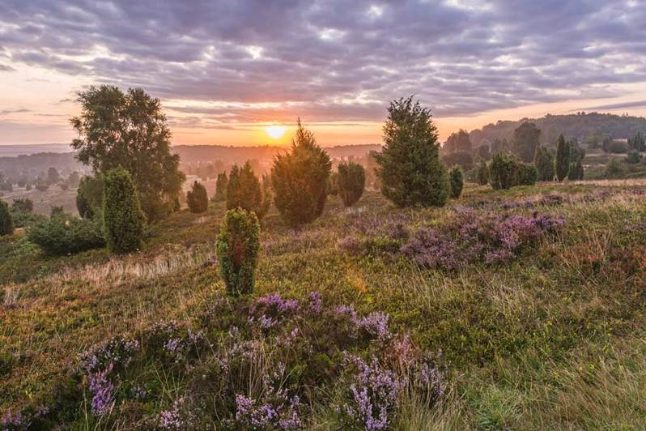
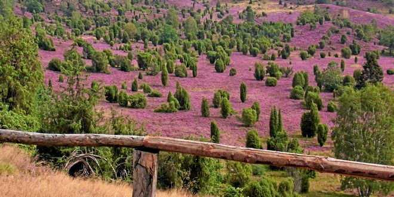

Die Lüneburger Heide (niederdeutsch Lümbörger Heid) ist eine große, geografisch überwiegend flachwellige Heide-, Geest- und Waldlandschaft im Nordosten Niedersachsens in den Einzugsbereichen der Städte Hamburg, Bremen und Hannover. Sie ist nach der Stadt Lüneburg benannt und umfasst den Hauptteil des früheren Fürstentums Lüneburg. Besonders in den zentralen Teilen der Lüneburger Heide sind weiträumige Heideflächen erhalten. Sie bedeckten bis zum Beginn des 19. Jahrhunderts weite Teile Norddeutschlands, sind aber inzwischen außerhalb der Lüneburger Heide fast vollständig verschwunden. Die Heidelandschaften sind seit der Jungsteinzeit durch Überweidung der ehemals weit verbreiteten Wälder auf unfruchtbaren Sandböden im Bereich der Geest entstanden. Die noch vorhandenen Reste dieser historischen Kulturlandschaft werden vor allem durch die Beweidung mit Heidschnucken offengehalten.[1] Mit Hinblick auf ihre Landschaftsform ist die Lüneburger Heide für den Tourismus in Norddeutschland von Bedeutung. Sie wird teilweise in Naturparks gepflegt.
Lüneburger Heide:

